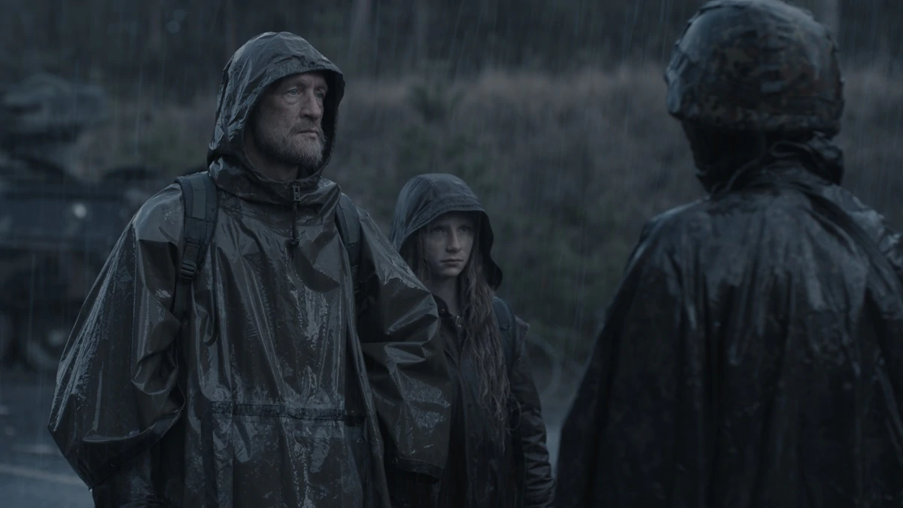
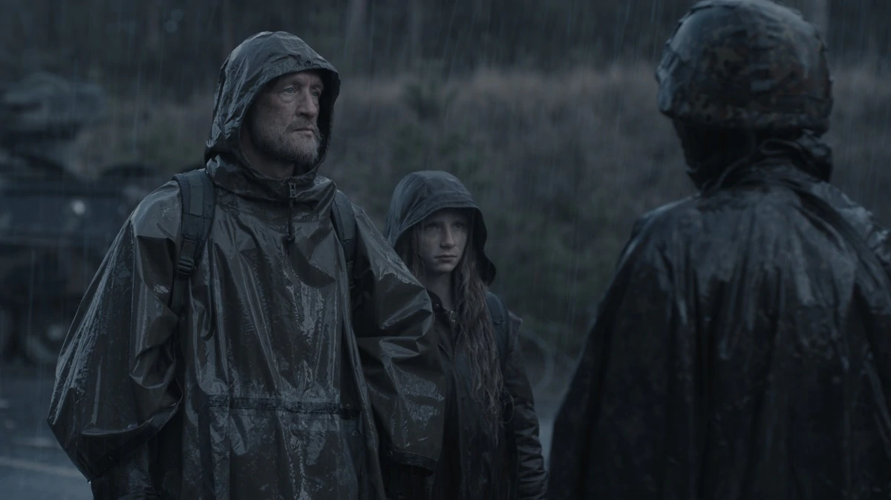

Dark is different from any other Time-travel movie or series it takes time as an element which nothing has used before like it. the creators did a excellent job of storytelling and keeping the plot together and shocking us every episode. The plot of the series is quite complicated but if you have watched it entirely then to there will be some details that you have missed .Its one of the rare series that makes you completely lose your mind and doesnot let to stop thinking about the things you saw
DARK is Arguably the Greatest Science-Fiction Series ever made in the History of (OTT) Online Series till date. Set in a German town, where the disappearance of two young children exposes the relationships among four families. It is all about time travel and it’s paradoxes like Predestination Paradox, Bootstrap Paradox, Loopholes, Quantum entanglement, and many more. A Very intriguing & mind-bending sci-fi mystery consisting of 3 Seasons spanned across Decades, Centuries, and even Worlds with about 60 Variations of characters.
Dark. This show is just beyond exceptional. I was literally awestruck after seeing the finale. I wonder how these creators managed to create such a unique script with all the complex twists and turns yet presented it so beautifully to its audience. Well planned and executed show ever (I mean it). Everything is beautiful in this show, the narration/story/music/sound effects/acting/ character development/cinematography and most importantly on how they have chosen certain actors typically like their younger and older selfs.
 
